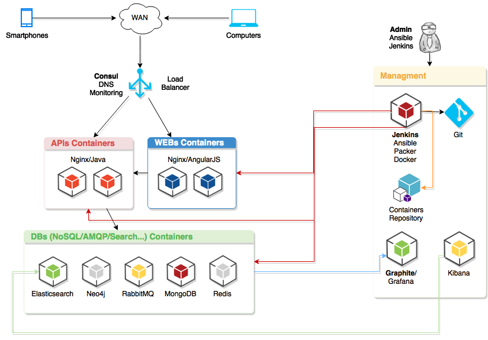

Nousmotards is a social network for bikers made by bikers. The goal is to provide applications to make bikers' life easier.
You can schedule, organize, create maps, meet new friends...
www.nousmotards.com
About Founders
3 friends with the same passion
Why did we choose Ansible?
YAML make it simple and easy to read
Fast to write and execute
Agentless
Tons of available community plugins and role
Written in Python
Because that just ROX !!!
Nousmotards
Architecture overview

Deep dive
Architecture
Docker
Simple to install (repo + packages)
Registry (public/private)
Container versionning
Uses some LXC internals
Easy to use
Stable enough for small production
Packer
Define source image
Pre scripts (ansible dependencies)
Run Ansible playbook
Post scripts (clean)
Export in wished format
Push to your Docker registry
Ansible
Store everything on Git
Avoid repetition (with_*)
Set multiple envs
Use vars at max
Fail fast
Community: Ansible Galaxy
Smarter is better
Jenkins
Build apps in Docker and publish to a private http repo
Build containers with Packer and Ansible
Publish Docker containers to private repo once validated
Deploy new containers with Ansible
Git
Keep / trace all changes
Build and deploy with Git hooks (and Jenkins/Ansible)
Harder, better,
faster, stronger
Consul
Why using Consul?
Deploy the servers
Deploy the agents on containers
Register/unregister DNS entry with container start/stop